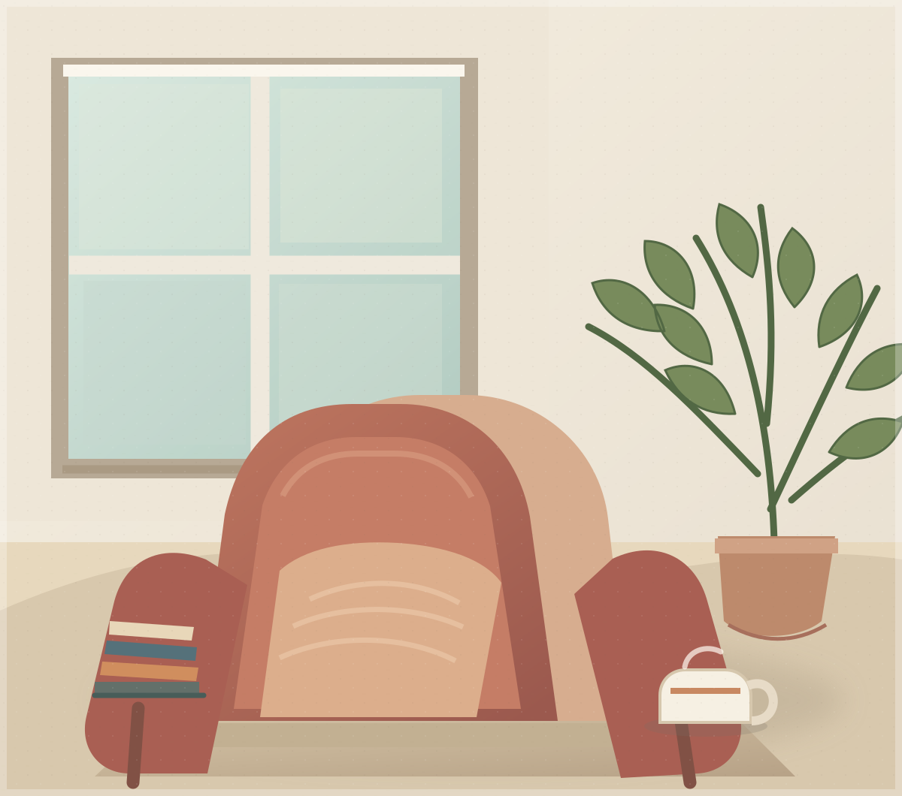

the little garden journal
Notes from the garden
need creative services? visit Frankie Studio

life
It’s Monday morning back at school, and my homeroom teacher asks the polite, innocent question: “What did everyone get up to this weekend?”
Hahaha. You know the question. The one where everyone suddenly has a social life worth reporting.
I let out a nervous cackle internally while the answers start rolling in around the room:
“I went surfing.”
“I had a footy game.”
“I went to my friend’s 18th.”
Meanwhile, I’m cringing, desperately searching for a lie to avoid revealing the remarkable contrast between their action-packed weekends and mine, when really, all I should be saying is, Yeah…I didn’t really do much. Just chilled.
And there it is. My weekend, reduced to two deeply unimpressive words: “just chilled”.
We’ve all been there. This moment has shivered our timbers, rattled our cages and sent us scrambling for a socially acceptable answer. But why?
Why do I feel the need to lie about my weekend?
Let me explain.
Historically, the aristocracy and nobility practiced conspicuous leisure, a term coined by American sociologist Thorstein Veblen in his 1899 book, The Theory of the Leisure Class. In his framework, simply having money is not enough to secure high social status; one must prove it. People would therefore engage in complex, time-consuming activities that yielded no tangible economic value. Wouldn’t you expect everyone to dream of sitting in their sprawling mansions, looking down on the people doing all the manual labour?
Fast-forward to today, and our social construct has done a complete 180: being busy is the new status symbol.
And I’m not liking it.
We wear packed schedules like badges of honour. Notice how the moment someone casually drops an I’ve been so busy into a conversation, it quickly spirals into a bizarre competition. Suddenly, everyone is trying to one-up each other: who can possibly cram more activities into twenty-four hours?
And the weirdest part? We secretly seem to enjoy it. There’s a peculiar satisfaction in saying “I’m so busy,” and hearing “You’re going to burn yourself out!” So we keep compulsively adding tasks, doing more, manufacturing urgency when there might not even be any. Until having nothing to do makes us feel…lazy.
But I’m here to enlighten you - doing nothing is not a waste of time.
Because all I ever hear people complaining about is how they “need a break!” So, if we’re all so burnt out, anxious, and physically ill, what exactly is this constant performance of productivity for? Are we actually getting more done, or are we just getting better at appearing busy?
Rest actually has value. Therapist Alana Papais argues that our best insights often arise after rest, suggesting that overexertion can dull our clarity and creativity. Even renowned singer-songwriter Lorde retreats into periods of hibernation, stepping away from the pressure of the studio to draw inspiration from mundane moments that fuel her deep, introspective lyricism.
And science backs this up. According to The Conversation, two recent meta-analyses synthesising dozens of studies found that people generally retained more information when learning was followed by several minutes of quiet rest rather than an absorbing task. Apparently, memories are fragile within the first minutes and hours, much more like wet cement than carved stone. Quiet rest gives the brain a chance to let memories set; without it, every new task leaves another footprint, potentially blurring the impression we were trying to preserve.
Does it become clearer now why our culture of hustling and our growing discomfort with slowing down are so problematic? When merely sitting with our thoughts, emotions, or unmet needs evokes discomfort as grating as chalk screeching across a blackboard, how are we supposed to nurture future Shakespeares and Beethovens? How are we supposed to think for ourselves when technology can generate thoughts with the click of a button? In an age of extensive artificial intelligence (AI) use, this becomes all the more vital. As technology’s ability to produce answers for us advances at an accelerating pace, we as a society need to prioritise the slower, messier process of thinking for ourselves. We mustn’t allow efficiency to come at the cost of imagination, curiosity, and originality.
I know you’re overwhelmed, wondering how on earth to flip the script.
If I earned a dollar for every occasion I finished a task and immediately went looking for another one, I’d probably be rich enough to afford a luxurious five-bedroom house with a pool in one of Adelaide’s wealthiest suburbs (yes, in this economy!). Finish my homework? Time to clean my room. Finish cleaning? Better find something else to do, but heaven forbid I just sit still.
Bear in mind, rest doesn’t have to mean sitting completely still, staring blankly at a wall – you know, like in films right before the MC has their Einstein revelation. It can mean wandering through nature with nowhere to be, eating an unhurried meal, letting yourself daydream on your couch, or spending an afternoon brainstorming silly conspiracy theories with someone you love. Whatever enables you to switch off. The point is, it doesn’t have to achieve anything.
Unfortunately, we still find ways to turn rest into productivity. That girl who started crocheting to unwind? Guess what she’s doing now? She competes with fellow crocheters to see who can make the most intricate cardigan, sells them on Etsy and films tutorials for TikTok. There goes your hobby, your little bit of respite in this cruel world, transformed into a side hustle.
You can’t escape it; this trend permeates every aspect of life like that feral strand of bone-straight hair sitting dead-centre in a head of perfect curls. Suddenly, reading comes with a Goodreads goal of 60+ books to meet, running needs a personal best, sleep needs a tracker and even meditation needs an app to tell us we’re doing it right.
At what point did relaxing become another item on the to-do list?
Look, I know I’ve been preaching all this jazz about resting and sitting still, but I’m guilty of it too; I like being busy too. And honestly, seeing our peers or favourite creators striving for personal growth can be immensely motivating. Their progress can inspire us to set goals of our own, step out of our comfort zones and prove to ourselves that we’re capable of more.
But I hate the constant chasing. The constant comparison. When every hobby becomes another benchmark to beat and every moment of leisure becomes an opportunity for self-improvement, we lose the very thing that made it enjoyable in the first place. For those of you with Hermione Granger-type older siblings: you’ll know there’s a difference between looking up to someone and feeling like you have to live up to the expectations they’ve set, right?
It is worth mentioning, however, that I’m not ignorant. I acknowledge that, at times, busyness is entirely truthful.
Many of us aren’t hiding behind some fake facade of productivity; we are genuinely forced to fend for ourselves and our families. Whether it’s breaking the cycle of poverty for future generations, or women fighting to earn respect in male-dominated fields, some people simply don’t have the luxury of doing “nothing”.
And that is a devastating reality.
But that’s exactly why we shouldn’t glorify busyness when it is a choice. Having the privilege to rest should not be something we feel guilty for. If we’re lucky enough to have nothing demanding our attention, why have we convinced ourselves that we need to be inventive…even extraordinary?
Therefore, it is high time we reframe our relationship with productivity. We must stop treating busyness as a measure of worth, or assuming that those who achieve the most are somehow more valuable than those who simply exist. Next time, don’t shame someone for doing “nothing”. Don’t perpetuate the idea that every spare moment needs to be quantified or monetised. Let’s realise, before it’s too late, that a life optimised for productivity isn’t necessarily a life optimised for being human.
So, dear reader, I sincerely request that you sit down for a minute.
And be.
Notes from the garden
The Sunday notebook
A little room to breathe
Stories for quieter days